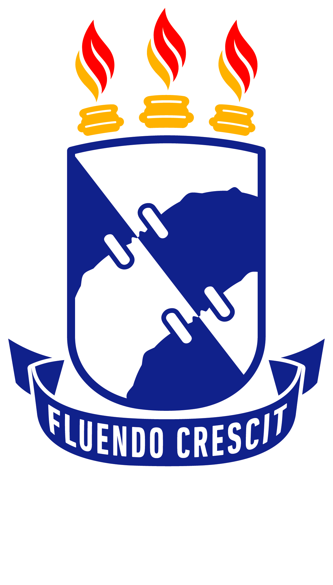
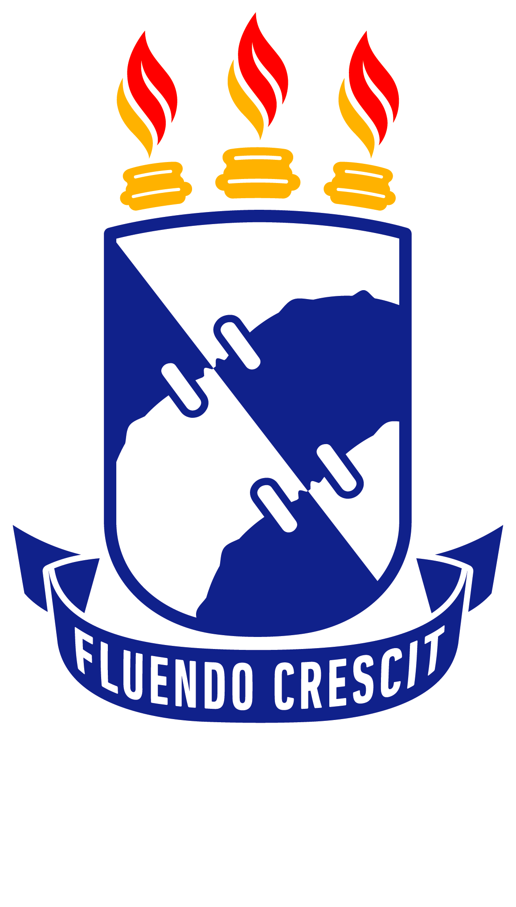

Bem vindo!
Quem sou eu?
Luiz Henrique Saldanha de França, nascido em 05/07/2004, atualmente
com 18 anos, na cidade de Aracaju, estado de Sergipe. Filho de
Ismael de França Silva Filho, motorista no Instituto de Tecnoogia e
Pesquisa da Universiade Tiradentes, e Ildete Saldanha Menezes de
França, formada em Geografia pela Universiade Federal de Sergipe mas
atualmente trabalha como agente comunitária de saúde. E tenho uma
irmã chamada Ana Lívia que atualmente cursa Administração e trabalha
em uma empresa de tecnologia chamada Alfama, conhecida
nacionalmente.
Dos 2 aos 14 anos, estudante do Colégio San Rafael, a melhor base
que tive, principalmente em Inglês. Cursei o ensino médio no
Instituto Federal de Sergipe (IFS), curso técnico integrado em
Infromática, onde tive uma boa base de programação, organização de
computadores e banco de dados, apesar de ter me aperfeiçoado por
fora.
Por conta da pandemia, o meu estudo do ensino médio acabou se
tornando bem limitado, com um Trabalho de Conclusão de Curso pra
fazer de forma remota, o que resultou em baixa taxa de sucesso.
Atualmente, curso Engenharia de Computação na Universiade Federal de
Sergipe.
Características
Pretendo terminar a faculdade e me aperfeiçoar em programação,
talvez em sistemas embarcados ou análise e ciência de dados,
inteligência artificial e outras coisas, também gosto de
desenvolvimento web e hardware.
Sou bom em trabalhar em equipe, desde que haja entrosamento e que
conheça as pessoas. Hábil com discursos.
Sou geek, apaixonado por cultura nerd, séries, filmes, animes e
mangás, possuo uma coleção que atualmente conta com 24 obras e
pretendo aumentá-la.
Habilidades:
- Português perfeito em leitura, escrita, fala e compreensão;
-
Inglês avançado em leitura e escrita, básico na fala e na
compreensão;
-
Espanhol avançado em leitura e escrita, básico na fala e na
compreensão;
- Informática básica, domínio de Word, Powerpoint e Excel;
-
Conhecimentos em organização de computadores e sistemas
operacionais;
- Conhecimentos em banco de dados relacional;
- Básico de redes de computadores;
- Desenvolvedor web fullstasck junior.
Linguagens de programação e tecnologias de desenvolvimento
-
Intermediário em Programção orientada a objetos com Java e Python;
- Básico em Programação funcional com Haskell;
- Banco de dados em SQL;
- Desenvolvimento web com HTML, CSS, JavaScript;
- Back-end com PHP
- Básico em bibliotecas de front-end, como Bootsrap e React;
-
Conhecimentos básicos em Análise e Ciência de dados com Python;
Projetos
 
